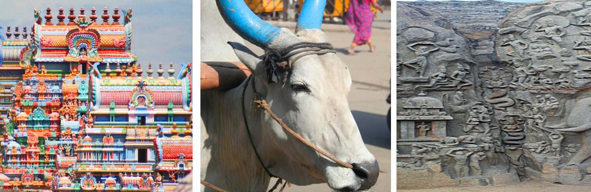

Retreats - South India 2019
South Indian Odyssey: 15 Days of Yoga, Temples and Cultural Immersion
18 November - 03 December 2019
Immerse yourself in the rich cultural and scenic experience of South India!
Discover India
This trip of a lifetime is set to be an amazing experience with a vast variety of activities that will immerse you in the culture of India. From visiting a number of UNESCO World Heritage sites, to exploring museums and epic temples, to learning about the local cuisine, to exploring local markets, to learning about the ancient practice of Vedic Chanting, to spoiling ourselves with Ayurvedic treatments, to blissful yoga, this adventure will excite your senses, and delight your body, mind and soul.
Meet your Hosts
On your journey, you will have two guides who will share their knowledge and look after you: Claire Prest, India Expert and Tour Leader, and Katie Garnett, Yoga Teacher/Therapist. You will also be joined by local Indian guides in the different cities who will share in-depth knowledge of each location.
Claire Prest
Originally from Melbourne, Claire has made India her home for the last 18 years where she organises and manages tours. Claire has incredible knowledge of Indian history and culture, speaks fluent Hindi and is passionate about yoga. She is excited to unite her two passions, India and yoga, on this very special tour. Katie Garnett
Katie teaches alignment-focused yoga through which she interweaves yogic philosophy and teachings. Katie structures her classes around specific learning objectives to enhance her client’s experience, and deepen their yoga practice and knowledge. Katie discovered yoga in 1997, began teaching in 2011 and became a qualified therapist in 2015. She is skilled at adapting the class to suit all levels and abilities.
Approximate Schedule |
Chennai |
Monday, 18 Nov 2019 |
Arrive in the steamy capital of Tamil Nadu in the evening. |
Chennai |
Tue, 19 Nov 2019 |
Enjoy the lounging around the hotel and recovering after your flight. Meet your Tour Guide, Yoga Teacher and travel companions. |
Chennai |
Wed, 20 Nov 2019 |
Today we begin with our first yoga session and set the tone for our journey together. We'll explore what brings us together and how we can support each other in the coming weeks. After breakfast we'll discover the city streets with a resident expert hearing many fascinating stories that guide the common beliefs and practices of the region. |
Puducherry |
Thu, 21 Nov 2019 |
Drive along the Coromandel Coast to the sprawling UNESCO World Heritage site at Mahabalipuram. A collection of ancient caves carved into and out of rock during the 7th and 8th century. We track the development of temple architecture and stone carvings during our site visit. After a spot of lunch, we continue onto the former French colony of Puducherry. After an evening yoga session, enjoy a stroll along the foreshore at sunset and sample signature Indo-French cuisine. |
Puducherry |
Fri, 22 Nov 2019 |
After morning yoga, we take to the streets by bicycle to explore the French colonial enclave. Cruising along wide boulevards we'll take in restored bungalows and civic buildings among the bustle of rickshaws and daily life. In the afternoon we'll take an excursion to the experimental spiritual society of Auroville. We'll have an opportunity to learn more about the founders and philosophy behind the international community that continues to thrive today. |
Tiruvannamalai |
Sat, 23 Nov 2019 |
After a morning yoga session, we'll transfer to the unassuming town of Tiruvannamalai, an important pilgrimage spot where the Hindu God Shiva is embodied in the mountain of Arunachala. This afternoon we'll be captivated by the vast temple complex of Arunachaleswar. Dating from the 11th century, the original structure has seen additions over the years and now encompasses walkways, towering gopurams (gateways aligned with the 4 cardinal points), water tanks, shrines, priests, sadhus and trinket sellers. |
Tiruvannamalai |
Sun, 24 Nov 2019 |
We dedicate today to surmounting the 800-metre-high boulder-strewn hill of Mt Arunachala. Leaving the village behind we'll enter two important caves where the revered Hindu sage Sri Ramana Maharishi spent 20 years practicing self-enquiry. We practice a little of our own as a fitting tribute. Continuing in Sri Ramana's very footsteps we'll reach the top of the mountain where we'll have an unsurpassable view over the town. |
Tiruvannamalai |
Mon, 25 Nov 2019 |
After a morning yoga session, we'll enjoy an excursion to the tranquil Sri Ramana Ashram and visit the shrine where the much-venerated Guru achieved Samadhi (ecstatic state involving conscious exit from the body). Set in beautiful green surroundings, we'll unwind, meet devotees, meditate and visit the bookshop. In the afternoon back in town we have the option to return to the Arunachaleswar Temple to participate in the evening puja (temple ceremony). |
Tajore |
Tue, 26 Nov 2019 |
Today we transfer to the ancient capital of the powerful Chola Kings. Reigning the entire Indian Peninsula during the medieval ages the Cholas built epic temples and developed a beautiful signature bronze casting style (mostly of Hindu Gods & Goddess) that continues today. We'll visit the UNESCO World Heritage Brihadishwara Temple and Fort complex this afternoon. Encompassing several pillared halls and shrines and 250 lingas along the outer walls this 'Big Temple' is the crowning glory of Chola architecture. We'll also visit the 3 metre Nandi carved from a single rock and peak into the inner shrine. |
Tajore |
Wed, 27 Nov 2019 |
This morning we are versed by Hindu priests in the ancient art of Vedic Chanting. Articulating the sounds that have reverberated this land for millennia, we learn the time-honoured practice and inherent wisdom behind the use of Mantras. Later on, we visit the Royal Palace and Museum Complex taking in various halls, galleries, library and bell tower. Afterwards we'll visit a handloom workshop and learn some signature South Indian drapes. In the evening we'll enjoy a classical music recital. |
Madurai |
Thu, 28 Nov 2019 |
After a morning yoga session, we'll drive to the thriving city of Madurai. One of South India's oldest cities, Madurai continues to be a place of commerce, pilgrimage and learning. We'll visit the landmark Sri Meenakshi temple located in the heart of the old city. The Temple's towering gopurams are riotously decorated with a profusion of multi-coloured Gods, Goddess, animals and other mystic figures. The world within is no less vivid with a bustle of temple activity around shrines, multi-pillared halls and a water tank. In the Temple Art Museum, we'll witness some exquisite bronze sculptures. |
Madurai |
Fri, 29 Nov 2019 |
An early pre-dawn rise will have us experience the city in an altogether different light. We'll observe householders decorate their doorsteps with mandalas to welcome prosperity to the home. Flower and vegetable markets as farm fresh produce rolls in and famous tea sellers boil up their spicy brew. Later we have the option to visit the Gandhi Memorial Museum or continue to explore the city streets. In the afternoon we visit a home and learn some of South India cuisine's specialities. |
Turtle Beach |
Sat, 30 Nov 2019 |
After a morning yoga session, we'll cross into the verdant state of Kerala. A land blessed with fertile soil and home to many of India's spices, Kerala has been dubbed 'God's Own Country' and it's easy to see why. We'll unwind under the shade of coconut palms or indulge in an Ayurvedic massage. Enjoy the spectacular sunsets of the west coast. |
Turtle Beach |
Sun, 1 Dec 2019 |
Today we enjoy a tranquil houseboat cruise on the beautiful backwaters. Reconditioned rice barge's navigate the vast river network that runs the length of the state. An area rich in agriculture, we'll observe farmers in the fields and produce making its way to market alongside people going about their daily lives. We'll sample delicious homecooked curries and even try the heady local brew of fermented coconut water. |
Kochi |
Mon, 2 Dec 2019 |
We transfer to the laid-back Fort Kochi, a place that has lured travellers and traders for over 600 years.
Its varied colonial past is visible today in the Chinese fishing nets, Jewish Synagogue, mosques, Portuguese houses and crumbling British residence. We take a leisurely walking tour around the colonial quarter taking in the Portuguese Palace and St Francis Church. We meander along backstreets and fill our lungs with pungent spices from the very warehouses from where they are shipped around the world. In the evening we'll witness a dynamic Kathikali classical dance performance. |
Kochi |
Tue, 3 Dec 2019 |
After a morning yoga session, the rest of the day is free to enjoy the delights of the market and pick up any souvenirs for home. You may want to take this opportunity to book an Ayurvedic massage, drop into the numerous art galleries promoting local and international art or just hang out in courtyard cafes. During the day we'll enjoying a Farewell Lunch together. Depart back to your hometown in the evening. |
Inclusions:
- Accommodation for all 15 nights
- All Meals and Mineral Water
- All Activities and Transfers mentioned in the program (excluding the optional extras, see below)
- All Monument Entry Fees
- Accompanying Tour Leader and Yoga Teacher
- Licensed English speaking private Local Guides
- All currently applicable taxes
Exclusions:
- Travel Insurance
- International airfare, other than mentioned above
- Indian Visa (see below)
- Tips to guides, drivers, porters, hotel staff or at restaurants
- Camera/video permits where required
- Personal expenses, including alcohol
- Early check-in or late check-out at hotels
Optional Extras (include an additional cost):
- Arrival Transfer from Airport
- Ayurveda Treatments
- Additional Night Pre-Tour @ Courtyard by Marriot in Chennai
Rates:
- Twin $6,000 per person - please let us know if you'd like to share a room with someone else on the journey.
- Single $8,000 per person
Indian Visa:
You will be responsible for obtaining a valid visa for India. The Government of India now allows application for a simple tourist visa online (http://www.indianvisaonline.gov.in) without having to send in their passports. This electronic visa is valid for one stay of up to 30 days. Visas can also be obtained at a local embassy or consulate before arriving in India.

|